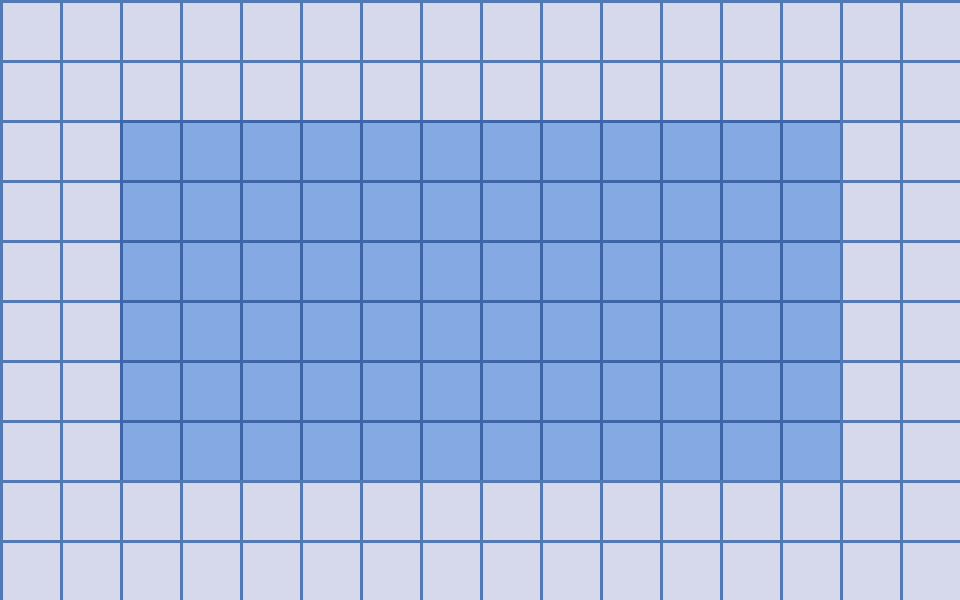

Demo page[1]

This page shows the default styles. Replace this text when the content is ready.
Ordinary hyperlinks, paragraphs, media, captions, and footnotes use standard HTML.
Demo media
Footnotes
- Demo footnote. Replace or remove.

This page shows the default styles. Replace this text when the content is ready.
Ordinary hyperlinks, paragraphs, media, captions, and footnotes use standard HTML.